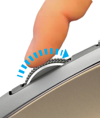

Scrollehjul der tilpasser sig hastigheden
Hvis SmartShift™ er aktiveret, tilpasser scrollehjulet hastigheden og skifter automatisk mellem to scrolletilstande som reaktion på dine bevægelser.
- Trinvis (modhage) tilstand – ideel til præcis navigation af elementer og lister.
- Med lynhurtig (frigear) tilstand og næsten friktionsfri rulning kan du flyve gennem lange dokumenter og websider.
Rul hurtigt for at skifte til
|
Brems, og rul langsomt
 |

Aktivér SmartShift
Vælg Aktiveret i rullemenuen SmartShift på fanen Peg og rul.

Du deaktiverer SmartShift ved at vælge Deaktiveret i rullemenuen SmartShift.
Så længe SmartShift er deaktiveret, har rulning og opbremsning ingen effekt på den aktuelle scrolletilstand.
Sådan skiftes tilstande manuelt
Uanset om SmartShift er aktiveret eller deaktiveret, kan du altid skifte mellem tilstande ved at trykke på funktionsomskifteren.
Som standard er knappen øverst på musen indstillet til tilstandsskift. (På fanen Mus kan du se knappernes aktuelle funktioner.)

Sådan indstilles en lås tilstand til scrollehjulet
Hvis du kun har brug for én tilstand, kan du låse scrollehjulet i enten trinvis (modhage) eller lynhurtig (frigear) tilstand.
På fanen Peg og rul skal du vælge Modhage eller Frigear i rullemenuen Lås scrollehjulstilstand.

VIGTIGT!
Hjulet kan kun låses i en bestemt tilstand hvis SmartShift er deaktiveret og ingen MX Master-knap er indstillet til funktionsskift.
Sådan aktiveres en låst tilstand til scrollehjulet
- Vælg Deaktiveret i rullemenuen SmartShift.
- På fanen Mus klikker du på den fremhævede tilstands skifteknap og vælger en anden handling end tilstandsskift.
Du kan finde flere oplysninger i fordybelsesguiden til MX Master.